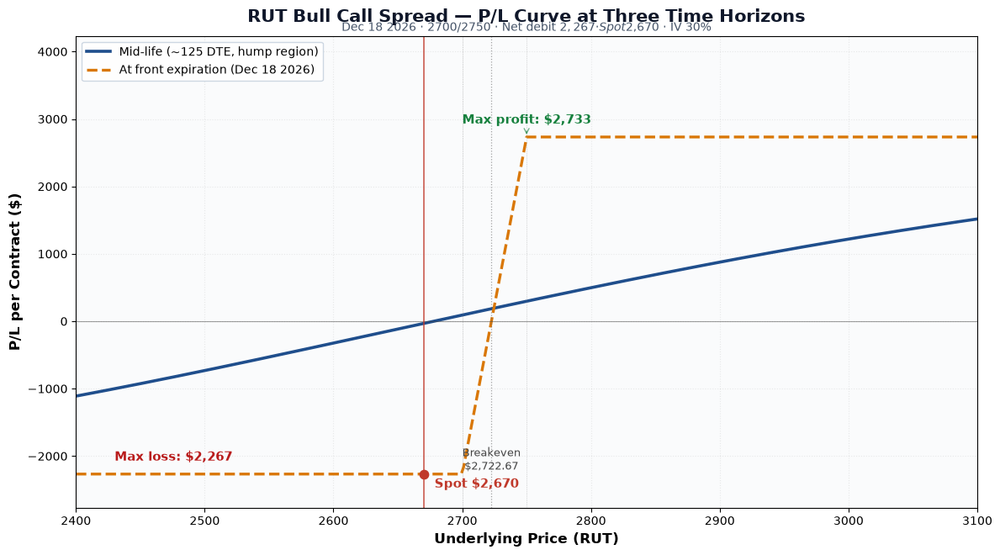
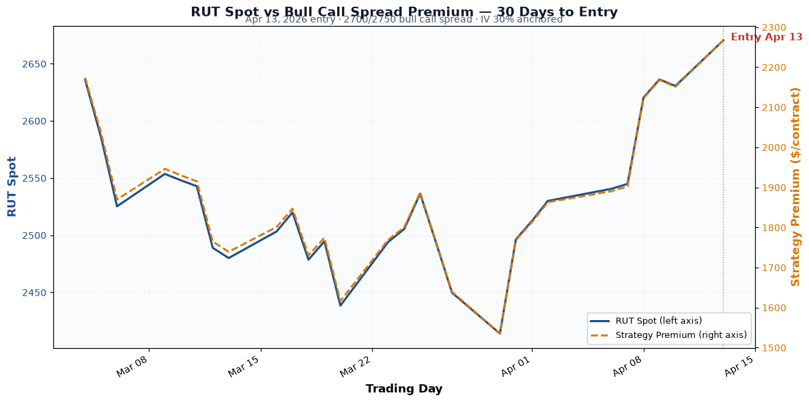

P/L Curve — Three Time Horizons

Max Profit
$2,733.01
spread width - debit
Max Loss
$2,266.99
defined = net debit
Net Debit
$22.67
1 bull call spread · $2,267 total
Breakeven
$2,722.67
lower strike + debit
Visualize this trade on OptionStrat →
Hero Chart: P/L Curve
The two time horizons tell the same story as most vertical spreads: capped upside, capped downside, with the expiry curve showing the trade's terminal payoff and the mid-life curve showing the early-exit potential. The spread sits in a loss zone at entry because RUT ($2,670) is below the $2,700 long strike — the trade needs a 2% rally to get into the money, and a 6%+ rally to print max profit.
Why this trade
- Tactical breakout entry. RUT had been consolidating in a 6-week range between roughly $2,414 (Mar 30 low) and $2,548 (Apr 7 high). On Apr 8-13 the index broke out of that range to the upside, gaining ~5% in 5 trading days. This position was opened into the breakout, expressing the view that the move extends.
- Bullish but defined. A naked long call would have given unlimited upside but exposed the position to full premium risk if the breakout failed. The vertical spread caps profit at $2,733 (above $2,750) but limits loss to the $2,267 debit, so a failed breakout costs the trade but doesn't blow up the position.
- Vol surface was bid. RUT IV was running ~30% — elevated for the index, reflecting tariff and macro uncertainty. With 8 months to expiration, IV=30% on a $50-wide spread gives roughly 45% of the spread width as debit, which is in the typical 40-50% range for short-duration verticals on high-IV underlyings.
- Skew efficiency. A $50-wide spread on a $2,670 underlying is ~1.9% of spot. For a vertical on a high-priced index like RUT, this is a tight-enough band to capture a meaningful move but wide enough to give the trade room to work without requiring an exact target.
Trade Construction & Greeks
Greeks are computed at the entry spot ($2,670.49), with both legs expiring Dec 18 2026 (249 DTE), IV surface anchored at 30%, risk-free rate 4.5%, no dividend yield. Numbers below are per-contract (×100 shares).
Per-leg breakdown (Black-Scholes, RUT $2,670.49, IV 30%, r 4.5%):
| Greek | Long 2700C | Short 2750C | Net (per contract) |
|---|---|---|---|
| Price | $287.62 | $264.95 | $22.67 debit |
| Delta | +58.06 | +55.15 | +2.91 |
| Gamma | +0.059 | +0.060 | -0.00073 |
| Theta | -67.49 | -67.46 | -0.04 |
| Vega | +861.92 | +872.61 | -10.69 |
| Rho | +861.52 | +823.92 | +37.60 |
Interpretation:
- Net delta +2.91: roughly 3 deltas of long RUT exposure per contract. Small because the two strikes are only $50 apart — most of the long-call delta is offset by the short-call delta.
- Net gamma ≈ 0: the long and short legs have nearly identical gamma — they cancel. This is the textbook characteristic of a tight vertical spread: the position is directionally biased but neutral to a move in vol-of-vol.
- Net theta ≈ 0: same idea — both legs decay at nearly the same rate, so time decay isn't a meaningful headwind. (Wider strikes on lower-IV names would show more net theta, but here they're offset.)
- Net vega -10.69: slightly negative — a 1-point rise in IV would cost the position ~$11. Not material at 30% IV, but worth noting if IV spikes further (which can happen in tariff-shock regimes).
30 Days Leading Up to Entry

The chart below compares RUT's spot price (left axis) to the strategy's premium (right axis) over the 30 trading days leading up to entry. The two lines track closely — RUT dipped from ~$2,636 in early March to a $2,414 low on Mar 30, and the strategy premium bottomed at $1,535/contract on the same day. Both recovered in tandem as RUT broke out, with the strategy premium hitting $2,267/contract at entry.
This correlation is the trade's primary signal: the breakout in spot drove a near-equivalent breakout in the spread's premium. That tight co-movement is what made the entry a low-conviction vs. high-conviction decision — the breakout was visible, momentum was real, and the spread was being bid up alongside the rally.
Underlying Setup at Entry
RUT closed at $2,670.49 on April 13, 2026, with implied volatility around 30% — elevated even for the index, which routinely trades in the 18-25% IV range in calm conditions. The April tariff announcement cycle had pushed realized vol higher, and the 30% IV reflected ongoing uncertainty.
The setup had been on the watchlist since the Mar 30 lows. RUT had bounced 10.6% off the lows ($2,414 → $2,670) over 10 trading days and was testing the upper end of the Q1 trading range near $2,650. The trade thesis: small-cap relative-value compression was due for a mean-reversion move higher, and a defined-risk vertical gave exposure to a 5-8% RUT rally by year-end without taking on undefined risk.
Status
| Date | RUT Price | Position Value | P&L | Notes |
|---|---|---|---|---|
| 2026-04-13 (entry) | $2,670.49 | $2,267 debit | — | Opened. IV ~30%. Long 2700C Dec 18 / short 2750C Dec 18. RUT breaking out of 6-week range. |
| 2026-07-14 (current) | $2,964.76 | ~$3,265 | ~+$998 (+44%) | RUT has rallied 11% in 3 months. Long leg deep ITM ($264.76 intrinsic), short leg ITM ($214.76 intrinsic). |
The trade is performing as designed — RUT has rallied well past the spread's $2,723 breakeven and is approaching the $2,750 short strike (currently 1.7% away). At max profit (RUT ≥ $2,750 at Dec 18), the trade will print $2,733 per contract. The current position is capturing roughly 36% of the max-profit potential and is sitting on a 44% gain.
Decision pending: Take profits early on the current rally (50% rule = ~$1,367), or let the trade run to expiry in hopes of capturing the full $2,733? RUT is now trading ~1.7% below the short strike, so there's still a real shot at max profit if the index holds above $2,750 through year-end. But with 5 months of time value left to give back, an early exit at the current ~$998 mark offers a better risk-adjusted outcome.
Status: Open.
How We Use This Tool
We use OptionsStrat to visualize the trade's payoff at any spot price and time horizon. The platform shows the breakeven, max profit/loss, probability of profit, and how the Greeks evolve through time, which makes the bull-call-spread thesis operational rather than directional.
Disclaimer
This trade log is published for informational and educational purposes only. Nothing here is investment advice. Trading options involves substantial risk of loss and is not appropriate for every investor. Past performance, including the journal entries on this site, does not guarantee future results. You are solely responsible for your trading decisions. See the full disclaimer.